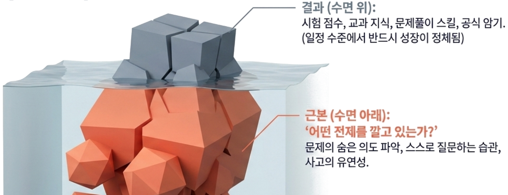
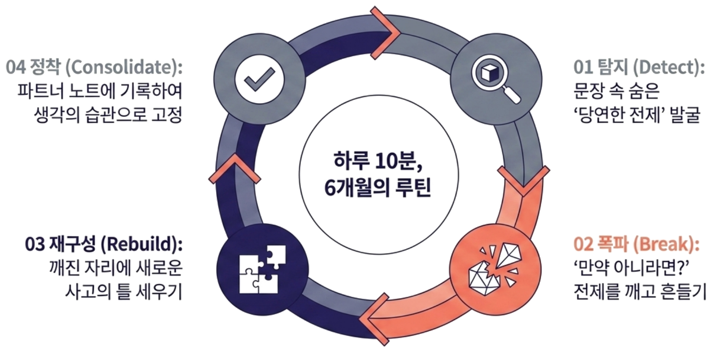
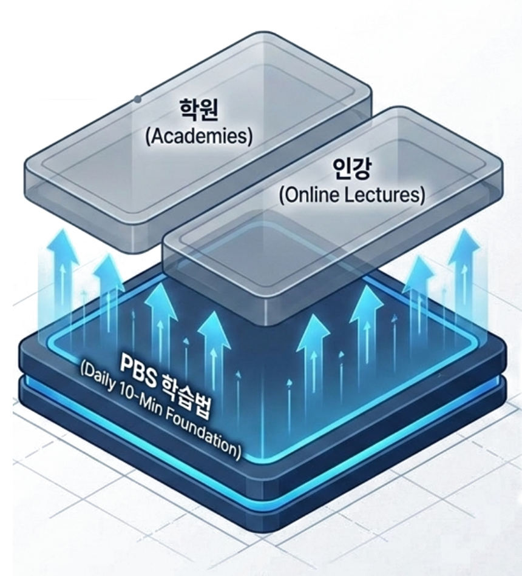

PBS 학습법 · Premise-Break Schema
지금 다니는 학원은 그대로. 하루 10분으로,
처음 보는 문제도 스스로 풀어내는 사고력을 6개월간 키웁니다.
👆 버튼을 눌러 전제가 무너지고 다시 세워지는 걸 확인해보세요
가입 없이, 실제 심화 문항으로 30초 안에 확인
학원·문제집은 그대로 두고, 숨은 전제를 찾아 스스로 생각하는 힘을 키우는 독자 기술 2건을 특허 출원했습니다.
대한민국 특허 출원 중 · 방법 특허
적응형 전제 탐지 및 사고 프레임 재구성 시스템
출원번호 제2026-XXXXXXX호
대한민국 특허 출원 중 · BM 특허
전제-폭파 기반의 단계적 사고 훈련 콘텐츠 구조 및 제공 방법
출원번호 제2026-XXXXXXX호
7일 전액 무료 · 신용카드 없이 시작 · 위약금 없이 언제든 해지
Where to start
이 순서대로 보시면 가장 빠르게 판단하실 수 있어요.
PBS 매거진
전제를 의심하는 법,
아티클로도 만나보세요
아이의 공부 습관을 바꾸고 싶은 부모님을 위해, PBS식 사고법을 실생활 사례로 풀어낸 글을 매주 연재합니다.
PBS 매거진 보러가기 →Exam-ready, not just knowledge-ready
매일의 전제 훈련은 베이직도 프리미엄도 똑같습니다. 시험이 다가오면, 프리미엄은 이렇게 실전 감각까지 챙깁니다.
Calendar
시험일을 등록하면 D-Day 카운트다운과 이번 달 미션 현황을 한눈에. 베이직 3개, 프리미엄 무제한.
PBS Mindmap
베이직 · 프리미엄 전 플랜 제공점수가 아니라 전제를 스스로 잡아내는 힘이 쌓입니다. 이 기록은 학년이 바뀌어도 이어지고, 멈춰도 사라지지 않아요.
최상위권까지
약 6개월이면 생각이
눈에 띄게 달라지는 시점
상관→인과, 숨은 전제 등 유형별로 스스로 잡아내는 정도를 한눈에.
지금 어디쯤인지 냉정하게, 그리고 좁혀갈 수 있게 보여줍니다.
질문의 질이 6개월간 어떻게 달라지는지 곡선으로 확인해요.
쌓인 지도는 다음 학년으로 승계되고, 멈춰도 기록은 보관돼요.
사고분석관 루카가 매 사건마다 함께합니다 — 표정 없는 정육면체 캐릭터가, 전제를 발견할 때마다 정팔면체로 형태를 바꾸며 반응해요.
Across every subject
수학
"빨리 푸는 과목"이라는 전제
→ 느리게 판 한 문제가 열 문제를 엽니다
언어
"다들 알고 너도 알 거"라는 전제
→ 몰래 심어진 전제를 걷어내면 말이 나를 못 깎습니다
사회
"기록 = 진실"이라는 전제
→ 기록되지 않은 관점을 상상하면 역사가 입체가 됩니다
일상
"열심히만 하면 된다"는 전제
→ 방향 없는 노력은 헛돕니다, '어떻게'를 먼저 물어야 합니다

"학원을 3개나 보내는데, 서술형 문제만 나오면 항상 감점을 받아요."
이해가 아니라 '패턴 암기'로 풀고 있다는 신호입니다.
"해설지를 보면 다 이해하는데, 막상 시험지에 새 유형이 나오면 손을 못 대요."
정답을 아는 것과 '스스로 풀어내는 것'은 다릅니다.
"예습·복습 스케줄은 제가 다 짜줘야 하고, 스스로 '왜 틀렸지?'를 고민한 적이 없어요."
전제를 의심해본 적이 없다는 뜻입니다.
"정답은 곧잘 맞히는데, '왜 그런지' 물으면 설명을 못해요."
왜 맞았는지 모르면, 다음 문제에서 다시 틀립니다.
원인은 '머리'도 '시간'도 아닙니다.
공부의 전제를 바꾸지 않았기 때문입니다.
문제 속에 숨은 '당연한 전제'를 찾아내 깨뜨리고, 새로운 사고의 틀을 세우는 4단계. 하루 10분, 6개월이면 태도 자체가 바뀝니다.

예시: 고1–2 수학 "등호(=)는 정답을 뜻한다"는 전제 — 실제 심화 트랙 문항 기반
Detect
문제 속 숨은 전제를 발견
문제 속 '당연한 가정'에 물음표를 붙인다
Break
전제를 깨뜨려 흔들기
만약 그 가정이 틀렸다면? 상상해 본다
Rebuild
새 사고 틀로 다시 세우기
새로운 눈으로 문제를 다시 바라본다
Consolidate
반복으로 습관 만들기
하루 10분, 이 루틴을 몸에 밴다
암기 전략도, 문제 풀이도, 열린 탐구도 아닙니다. PBS는 '전제' 자체를 발굴하고 재구성하는 사고 훈련입니다.
Daily
매일
새로운 전제 사건 한 편
Thinking levels
0단계
입문 · 기본 · 심화 사고 경로
Deep change
0개월
생각의 체질을 바꾸는 트랙
학원 가기 전, 사고를 데우는 워밍업
학원 · 인강과는 무엇이 다를까요
학원
지식 습득 축
PBS 학습법
사고 태도 축
인강
지식 습득 축
학원·인강을 대체하지 않습니다. 학원에 가기 전, 스스로 생각하는 근육을 먼저 풀어두는 워밍업입니다.
Curriculum
사고의 복잡도에 따라 입문 · 기본 · 심화 3단계로 나뉘고, 이를 모두 마치면 마지막으로 실전 적용 랩(Application Lab)이 열립니다.
입문 — Entry
일상 문장·짧은 사건에서 숨은 전제를 발견하는 감각을 만듭니다.
기본 — Core
국어·수학 소재로 확장, '전제 찾기 → 폭파 → 파트너 노트' 루틴을 정착합니다.
심화 — Advanced
수능 지문·시사 소재까지, 어떤 소재에도 같은 사고 습관을 적용합니다.
실전 적용 랩 — Application Lab
심화까지 모두 마치면 열리는 마지막 단계. 쌓은 전제 사고력을 실제 기출·시험 유형 문제에 직접 적용합니다. (프리미엄)
Why parents choose PBS
이미 하고 계신 학원·문제집·인강은 그대로 두셔도 됩니다. PBS는 그 시간의 흡수력을 바꾸는 훈련입니다.

학원은 '어떻게(How)'를 가르치고,
PBS는 '왜(Why)'를 묻게 합니다.
PBS 학습법은 점수보다 근본을 바꿉니다. 근본이 바뀌면 점수는 저절로 따라옵니다 — 파트너 노트가 아이의 생각하는 습관이 어떻게 자라는지 매주 보여줍니다.
* 성장 지표는 아이마다 다르게 나타납니다. 위 수치는 파트너 노트 리포트의 예시입니다.
제 아들은 어느 날부터, 문제를 풀기 전에 "이게 왜 이렇지?"를 먼저 묻기 시작했습니다. 답을 맞히는 아이에서 질문을 던지는 아이로 — 그 변화를 지켜보는 사이, 수학 내신은 3등급에서 1등급이 되어 있었습니다. 성적은 그 변화가 남긴 결과였을 뿐, 애초의 목표는 아니었습니다. 저는 그 변화를 눈앞에서 봤고, 그래서 이걸 만들었습니다.
PBS 학습법 창업자 · 고2 아들의 아빠
For high schoolers · 고1·고2 학부모께
중학교까지는 암기와 반복만으로도 버틸 수 있습니다. 하지만 고등학교는 스스로 사고를 조직해야 하는 구간이라, '푸는 법'만 익힌 아이가 유독 이때 무너집니다. 사고의 습관은 나이가 아니라 방향의 문제입니다.
재미있게, 하지만 유치하지 않게
고등학생 눈높이의 사건으로. 가볍게 몰입하되, 다루는 사고는 진지합니다.
학원과 부딪히지 않습니다
학원이 채우는 '지식'과 PBS 학습법이 세우는 '사고 태도'는 다른 축이라, 병행해도 서로를 받쳐줍니다.
6개월, 방향을 바꾸기에 충분한 시간
단기 점수를 약속하진 않습니다. 다만 6개월은 아이의 생각하는 방향을 다시 세우기에 충분합니다.
아이의 사고 습관이 지금 어디에 있는지부터 확인해 보세요.
무료 진단으로 시작하기 →Trust
현직 교사 감수
커리큘럼 검수 예정
특허 2건 출원 중
방법·BM 특허 + 상표 (특허청 출원)
개인정보 안전 취급
최소 정보만 수집·보관
위약금 없는 해지
언제든 월 단위 정리
Pricing
매달 치르는 공부는 이번 시험과 함께 사라집니다. 여기서 바뀐 사고 습관은, 결제를 멈춘 뒤에도 아이에게 남습니다.
효과를 6개월 뒤에 확인하시게 하지 않습니다. 아이의 질문이 어떻게 달라지는지, 매주 파트너 노트로 보여드립니다.
6개월 약정 기준 · 약정 없이 월 단위로도 시작할 수 있어요.
Basic
시험 직전 마무리 세션을, 베이직에서도 필요한 시험에만 건별로.
Premium
환불 정책: 첫 7일은 전액 무료, 이후 월 단위 해지 · 위약금 없음.
In short
지금까지의 핵심을 3가지로 정리했습니다. 옆으로 넘겨보세요.
Difference
암기든 PBL이든 IBL이든, 어떤 방식으로 공부하든 상관없습니다. PBS는 그 위에 "왜 그런가"를 검증하는 습관 하나를 더합니다.
Fits your routine
다니는 학원·문제집·인강을 바꿀 필요 없습니다. 같은 시간에 더 깊이 흡수하도록, 하루 10분만 더합니다.
Adaptive
같은 학년이라도 막히는 지점은 다릅니다. 특허 출원 중인 적응형 전제탐지 시스템이 아이의 반응을 보고 다음 사건을 조정합니다.
가입 없이 실제 심화 문항으로 먼저 확인하거나, 7일 무료 체험으로 바로 시작할 수 있습니다.
7일 전액 무료 · 위약금 없음
지금 무료로 시작해보세요